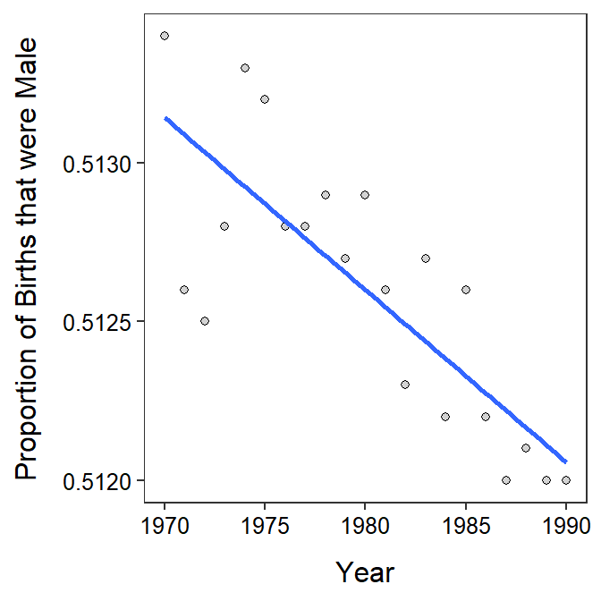
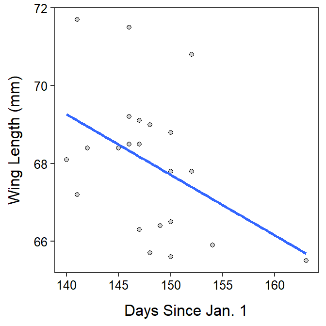

> br <- read.csv("BirthRatio.csv")lm.br <- lm(propmale~year,data=br)
cbind(Est=coef(lm.br),confint(lm.br)) Est 2.5 % 97.5 %
(Intercept) 6.200857e-01 5.811580e-01 6.590134e-01
year -5.428571e-05 -7.394606e-05 -3.462537e-05rSquared(lm.br)[1] 0.6373997ggplot(data=br,mapping=aes(x=year,y=propmale)) +
geom_point(pch=21,color="black",fill="lightgray") +
labs(x="Year",y="Proportion of Births that were Male") +
theme_NCStats() +
geom_smooth(method="lm",se=FALSE)`geom_smooth()` using formula 'y ~ x'
wfc <- read.csv("https://raw.githubusercontent.com/droglenc/NCData/master/Flycatcher.csv")
lm.wfc <- lm(winglen~date,data=wfc)
cbind(Est=coef(lm.wfc),confint(lm.wfc)) Est 2.5 % 97.5 %
(Intercept) 91.0702393 68.6497096 113.490769073
date -0.1557607 -0.3072602 -0.004261186rSquared(lm.wfc)[1] 0.186974ggplot(data=wfc,mapping=aes(x=date,y=winglen)) +
geom_point(pch=21,color="black",fill="lightgray") +
labs(x="Days Since Jan. 1",y="Wing Length (mm)") +
theme_NCStats() +
geom_smooth(method="lm",se=FALSE)`geom_smooth()` using formula 'y ~ x'